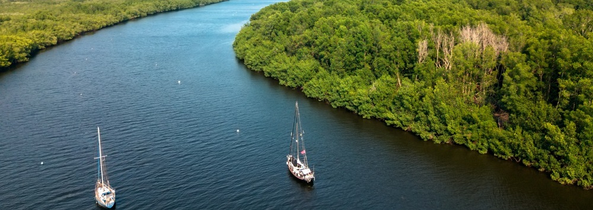
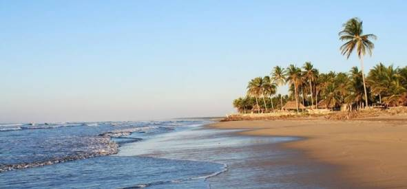
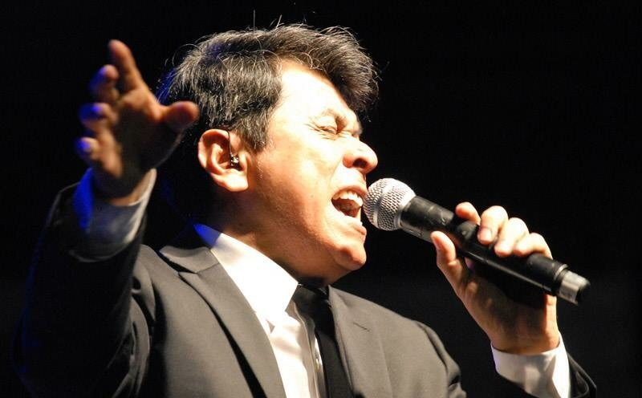
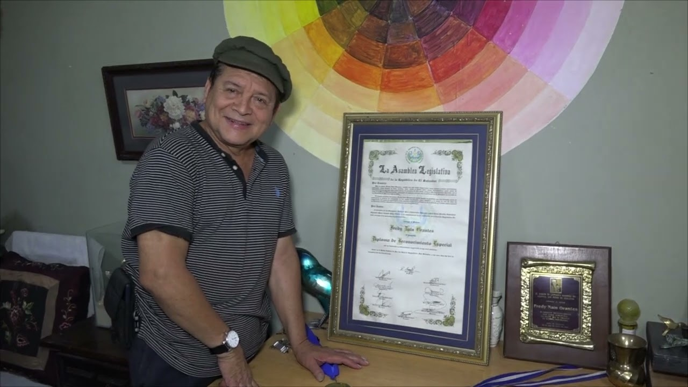

Usulután, cuyo nombre significa "ciudad de ocelotes" en náhuatl, es un departamento con una rica historia y diversidad geográfica. Fundado en 1865, ha sido un centro agrícola y cultural en la región oriental de El Salvador.
Municipios:
- Alegría
- Berlín
- California
- Concepción Batres
- El Triunfo
- Ereguayquín
- Estanzuelas
- Jiquilisco
- Jucuapa
- Jucuarán
- Mercedes Umaña
- Nueva Granada
- Ozatlán
- Puerto El Triunfo
- San Agustín
- San Buenaventura
- San Dionisio
- San Francisco Javier
- Santa Elena
- Santa María
- Santiago de María
- Tecapán
- Usulután (cabecera)
Centros turísticos
Laguna de Alegría

Conocida como "la esmeralda de América", esta laguna de origen volcánico es un atractivo natural rodeado de montañas y vegetación.
Bahía de Jiquilisco

Es la reserva de biosfera más grande de El Salvador, ideal para el ecoturismo, observación de aves y deportes acuáticos.
Playa El Espino

Una de las playas más extensas y visitadas del país, conocida por su arena blanca y oleaje moderado.
Personajes Célebres
Álvaro Torres

Torres es un cantautor que ha alcanzado reconocimiento internacional. Conocido por éxitos como "Nada se compara contigo", ha representado a El Salvador en escenarios mundiales, consolidándose como una de las voces más emblemáticas del país.
Schafik Hándal
Nacido el 13 de octubre de 1930 en Usulután, Hándal fue un influyente político y líder de la izquierda salvadoreña. Participó activamente en el Frente Farabundo Martí para la Liberación Nacional (FMLN) y desempeñó un papel crucial en los procesos políticos del país durante varias décadas.
Fredy Naín Orantes

Artista plástico residente en la ciudad de Usulután, Orantes ha dedicado gran parte de su vida a la pintura, contribuyendo al enriquecimiento cultural de la región con su arte.